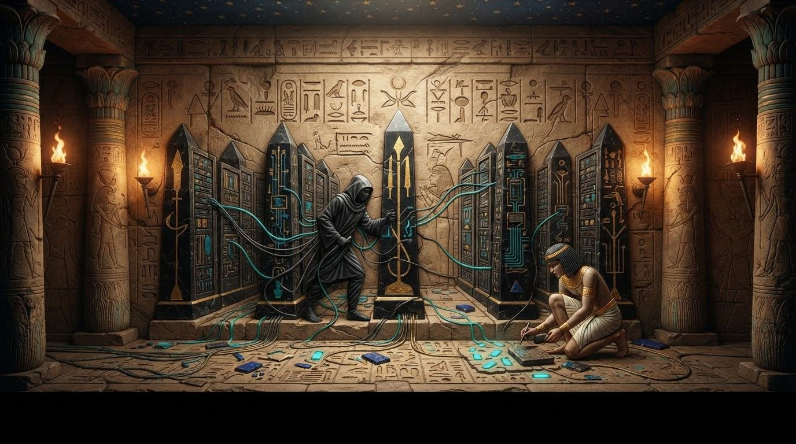
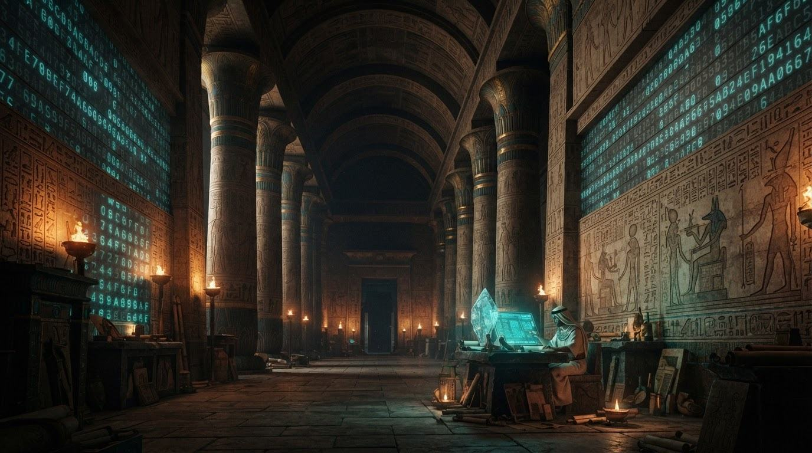

Mina Max · The Temple of Records
Every digital trace,
recorded.
Digital forensics & incident response. Challenges, investigations, and lessons from the field.

Digital forensics & incident response. Challenges, investigations, and lessons from the field.
